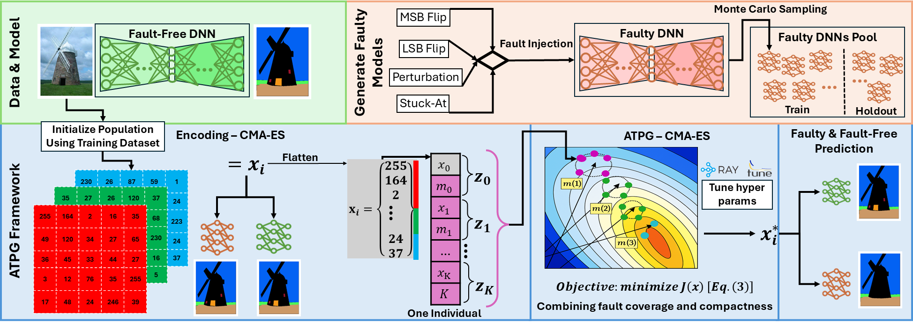

Testing & optimization
Finding faults with compact test sets
The problem
A model can run successfully while producing wrong outputs because of hardware faults. Testing needs inputs that reveal those failures efficiently.
My work
I developed optimization methods for test generation and evaluated them across neural-network architectures and fault models. The framework combines fault coverage and test-set compactness in its search objective.
